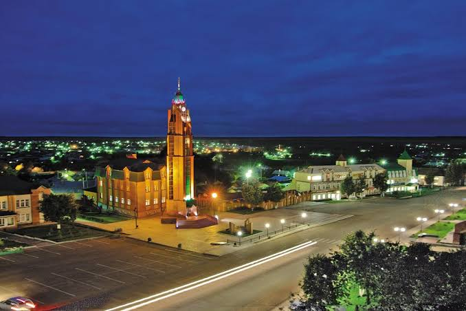

На этом сайте вы найдёте историю города, его достопримечательности, готовые туристические маршруты и азы ориентирования на местности. А в разделе с задачей можно проверить, получится ли из трёх пунктов маршрута настоящий треугольник и будет ли в нём прямой угол.
|
О городе |
||
|
Арск (тат. Арча) - город в Республике Татарстан, административный центр Арского района. Он расположен примерно в 60 км к северо-востоку от Казани, на реке Казанке, и входит в число старинных городов республики. Название города связано с историческим названием Арской земли, известной ещё со времён Казанского ханства. В городе проживает около 21 тыс. человек. |
 |
|